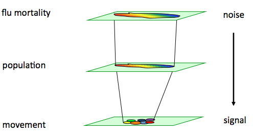
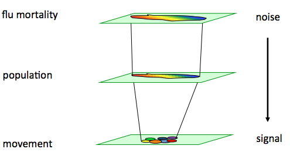

Data Science
The Flu that Flew: A Final Project- Kevin Eskici, Angela Fan, Mark Krass, Alice Zhao -

About
The goal of this project was to predict the flu mortality rate any given city in the United States would experience, given data about people's movements between cities (commercial flights), data about the population density of each city (Census Bureau), and data about past flu mortality (from the CDC). By integrating these datasets into a model, we hope to see through the noise and detect the signal that is true flu mortality rate, as illustrated in the diagram below.

The goal of this project was to predict the flu mortality rate any given city in the United States would experience, given data about people's movements between cities (commercial flights), data about the population density of each city (Census Bureau), and data about past flu mortality (from the CDC). By integrating these datasets into a model, we hope to see through the noise and detect the signal that is true flu mortality rate, as illustrated in the diagram below.

Implications
We chose to undertake this project because we envisioned potential tangible impacts. For instance, our project could contribute to more informed targeted vaccine distribution. Below, you can see historical data of CDC distributed vaccine quantities in the millions per month. Based on our model, MORE INFORMATION HERE, GET BACK TO THIS PLEASE
The Flu that Flew
We chose to undertake this project because we envisioned potential tangible impacts. For instance, our project could contribute to more informed targeted vaccine distribution. Below, you can see historical data of CDC distributed vaccine quantities in the millions per month. Based on our model, MORE INFORMATION HERE, GET BACK TO THIS PLEASE
This website was inspired by: http://harvardchinacare.org/benefit2012